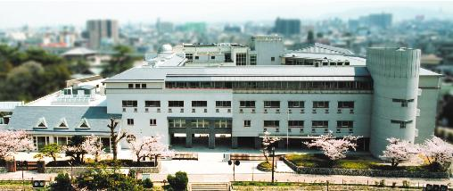

<ons-toolbar>
            <div class="left"><ons-back-button>Back</ons-back-button></div>
            <div class="center">岸コレとは</div>
        </ons-toolbar>
        
<div class="wrap">
    <div class="content">
        <div class="sentence">
            
                        <p>大阪府立岸和田高校に所蔵されている古文学」「郷土」「生物」「科学」に関する資料です。
                        これらは明治時代より収集されており、歴史的価値だけでなく科学・教育などの面からも価値があるので大変貴重なものです。</p>
            
        </div>
    </div>
</div>